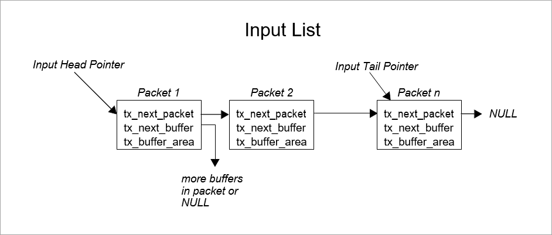
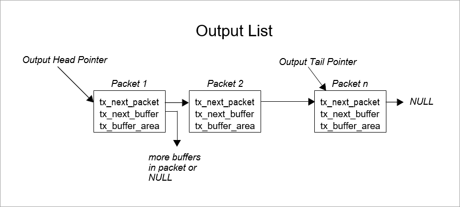

Chapter 5 - Device Drivers for ThreadX
This chapter contains a description of device drivers for ThreadX. The information presented in this chapter is designed to help developers write application-specific drivers.
Device Driver Introduction
Communication with the external environment is an important component of most embedded applications. This communication is accomplished through hardware devices that are accessible to the embedded application software. The software components responsible for managing such devices are commonly called device drivers.
Device drivers in embedded, real-time systems are inherently application dependent. This is true for two principal reasons: the vast diversity of target hardware and the equally vast performance requirements imposed on real-time applications. Because of this, it is virtually impossible to provide a common set of drivers that will meet the requirements of every application. For these reasons, the information in this chapter is designed to help users customize off-the-shelf ThreadX device drivers and write their own specific drivers.
Driver Functions
ThreadX device drivers are composed of eight basic functional areas, as follows.
-
Driver Initialization
-
Driver Control
-
Driver Access
-
Driver Input
-
Driver Output
-
Driver Interrupts
-
Driver Status
-
Driver Termination
With the exception of initialization, each driver functional area is optional. Furthermore, the exact processing in each area is specific to the device driver.
Driver Initialization
This functional area is responsible for initialization of the actual hardware device and the internal data structures of the driver. Calling other driver services is not allowed until initialization is complete.
| The driver’s initialization function component is typically called from the *tx_application_define* function or from an initialization thread. |
Driver Control
After the driver is initialized and ready for operation, this functional area is responsible for run-time control. Typically, run-time control consists of making changes to the underlying hardware device. Examples include changing the baud rate of a serial device or seeking a new sector on a disk.
Driver Access
Some device drivers are called only from a single application thread. In such cases, this functional area is not needed. However, in applications where multiple threads need simultaneous driver access, their interaction must be controlled by adding assign/ release facilities in the device driver. Alternatively, the application may use a semaphore to control driver access and avoid extra overhead and complication inside the driver.
Driver Input
This functional area is responsible for all device input. The principal issues associated with driver input usually involve how the input is buffered and how threads wait for such input.
Driver Output
This functional area is responsible for all device output. The principal issues associated with driver output usually involve how the output is buffered and how threads wait to perform output.
Driver Interrupts
Most real-time systems rely on hardware interrupts to notify the driver of device input, output, control, and error events. Interrupts provide a guaranteed response time to such external events. Instead of interrupts, the driver software may periodically check the external hardware for such events. This technique is called polling. It is less real-time than interrupts, but polling may make sense for some less real-time applications.
Simple Driver Example
An example is the best way to describe a device driver. In this example, the driver assumes a simple serial hardware device with a configuration register, an input register, and an output register. This simple driver example illustrates the initialization, input, output, and interrupt functional areas.
Simple Driver Initialization
The tx_sdriver_initialize function of the simple driver creates two counting semaphores that are used to manage the driver’s input and output operation. The input semaphore is set by the input ISR when a character is received by the serial hardware device. Because of this, the input semaphore is created with an initial count of zero.
Conversely, the output semaphore indicates the availability of the serial hardware transmit register. It is created with a value of one to indicate the transmit register is initially available.
The initialization function is also responsible for installing the low-level interrupt vector handlers for input and output notifications. Like other ThreadX interrupt service routines, the low-level handler must call tx_thread_context_save_ before calling the simple driver ISR. After the driver ISR returns, the low-level handler must call tx_thread_context_restore_.
| It is important that initialization is called before any of the other driver functions. Typically, driver initialization is called from tx_application_define. |
VOID tx_sdriver_initialize(VOID)
{
/* Initialize the two counting semaphores used to control
the simple driver I/O. */
tx_semaphore_create(&tx_sdriver_input_semaphore,
"simple driver input semaphore", 0);
tx_semaphore_create(&tx_sdriver_output_semaphore,
"simple driver output semaphore", 1);
/* Setup interrupt vectors for input and output ISRs.
The initial vector handling should call the ISRs
defined in this file. */
/* Configure serial device hardware for RX/TX interrupt
generation, baud rate, stop bits, etc. */
}FIGURE 9. Simple Driver Initialization
Simple Driver Input
Input for the simple driver centers around the input semaphore. When a serial device input interrupt is received, the input semaphore is set. If one or more threads are waiting for a character from the driver, the thread waiting the longest is resumed. If no threads are waiting, the semaphore simply remains set until a thread calls the drive input function.
There are several limitations to the simple driver input handling. The most significant is the potential for dropping input characters. This is possible because there is no ability to buffer input characters that arrive before the previous character is processed. This is easily handled by adding an input character buffer.
| Only threads are allowed to call the tx_sdriver_input function. |
Figure 10 shows the source code associated with simple driver input.
UCHAR tx_sdriver_input(VOID)
{
/* Determine if there is a character waiting. If not,
suspend. */
tx_semaphore_get(&tx_sdriver_input_semaphore,
TX_WAIT_FOREVER;
/* Return character from serial RX hardware register. */
return(*serial_hardware_input_ptr);
}
VOID tx_sdriver_input_ISR(VOID)
{
/* See if an input character notification is pending. */
if (!tx_sdriver_input_semaphore.tx_semaphore_count)
{
/* If not, notify thread of an input character. */
tx_semaphore_put(&tx_sdriver_input_semaphore);
}
}FIGURE 10. Simple Driver Input
Simple Driver Output
Output processing utilizes the output semaphore to signal when the serial device’s transmit register is free. Before an output character is actually written to the device, the output semaphore is obtained. If it is not available, the previous transmit is not yet complete.
The output ISR is responsible for handling the transmit complete interrupt. Processing of the output ISR amounts to setting the output semaphore, thereby allowing output of another character.
| Only threads are allowed to call the tx_sdriver_output function. |
Figure 11 shows the source code associated with simple driver output.
VOID tx_sdriver_output(UCHAR alpha)
{
/* Determine if the hardware is ready to transmit a
character. If not, suspend until the previous output
completes. */
tx_semaphore_get(&tx_sdriver_output_semaphore,
TX_WAIT_FOREVER);
/* Send the character through the hardware. */
*serial_hardware_output_ptr = alpha;
}
VOID tx_sdriver_output_ISR(VOID)
{
/* Notify thread last character transmit is
complete. */
tx_semaphore_put(&tx_sdriver_output_semaphore);
}FIGURE 11. Simple Driver Output
Simple Driver Shortcomings
This simple device driver example illustrates the basic idea of a ThreadX device driver. However, because the simple device driver does not address data buffering or any overhead issues, it does not fully represent real-world ThreadX drivers. The following section describes some of the more advanced issues associated with device drivers.
Advanced Driver Issues
As mentioned previously, device drivers have requirements as unique as their applications. Some applications may require an enormous amount of data buffering while another application may require optimized driver ISRs because of high-frequency device interrupts.
I/O Buffering
Data buffering in real-time embedded applications requires considerable planning. Some of the design is dictated by the underlying hardware device. If the device provides basic byte I/O, a simple circular buffer is probably in order. However, if the device provides block, DMA, or packet I/O, a buffer management scheme is probably warranted.
Circular Byte Buffers
Circular byte buffers are typically used in drivers that manage a simple serial hardware device like a UART. Two circular buffers are most often used in such situations—one for input and one for output.
Each circular byte buffer is comprised of a byte memory area (typically an array of UCHARs), a read pointer, and a write pointer. A buffer is considered empty when the read pointer and the write pointers reference the same memory location in the buffer. Driver initialization sets both the read and write buffer pointers to the beginning address of the buffer.
Circular Buffer Input
The input buffer is used to hold characters that arrive before the application is ready for them. When an input character is received (usually in an interrupt service routine), the new character is retrieved from the hardware device and placed into the input buffer at the location pointed to by the write pointer. The write pointer is then advanced to the next position in the buffer. If the next position is past the end of the buffer, the write pointer is set to the beginning of the buffer. The queue full condition is handled by canceling the write pointer advancement if the new write pointer is the same as the read pointer.
Application input byte requests to the driver first examine the read and write pointers of the input buffer. If the read and write pointers are identical, the buffer is empty. Otherwise, if the read pointer is not the same, the byte pointed to by the read pointer is copied from the input buffer and the read pointer is advanced to the next buffer location. If the new read pointer is past the end of the buffer, it is reset to the beginning. Figure 12 shows the logic for the circular input buffer.
UCHAR tx_input_buffer[MAX_SIZE];
UCHAR tx_input_write_ptr;
UCHAR tx_input_read_ptr;
/* Initialization. */
tx_input_write_ptr = &tx_input_buffer[0];
tx_input_read_ptr = &tx_input_buffer[0];
/* Input byte ISR... UCHAR alpha has character from device. */
save_ptr = tx_input_write_ptr;
*tx_input_write_ptr++ = alpha;
if (tx_input_write_ptr > &tx_input_buffer[MAX_SIZE-1])
tx_input_write_ptr = &tx_input_buffer[0]; /* Wrap */
if (tx_input_write_ptr == tx_input_read_ptr)
tx_input_write_ptr = save_ptr; /* Buffer full */
/* Retrieve input byte from buffer... */
if (tx_input_read_ptr != tx_input_write_ptr)
{
alpha = *tx_input_read_ptr++;
if (tx_input_read_ptr > &tx_input_buffer[MAX_SIZE-1])
tx_input_read_ptr = &tx_input_buffer[0];
}FIGURE 12. Logic for Circular Input Buffer
| *For reliable operation, it may be necessary to lockout interrupts when manipulating the read and write pointers of both the input and output circular buffers. * |
Circular Output Buffer
The output buffer is used to hold characters that have arrived for output before the hardware device finished sending the previous byte. Output buffer processing is similar to input buffer processing, except the transmit complete interrupt processing manipulates the output read pointer, while the application output request utilizes the output write pointer. Otherwise, the output buffer processing is the same. Figure 13 shows the logic for the circular output buffer.
UCHAR tx_output_buffer[MAX_SIZE];
UCHAR tx_output_write_ptr;
UCHAR tx_output_read_ptr;
/* Initialization. */
tx_output_write_ptr = &tx_output_buffer[0];
tx_output_read_ptr = &tx_output_buffer[0];
/* Transmit complete ISR... Device ready to send. */
if (tx_output_read_ptr != tx_output_write_ptr)
{
*device_reg = *tx_output_read_ptr++;
if (tx_output_read_reg > &tx_output_buffer[MAX_SIZE-1])
tx_output_read_ptr = &tx_output_buffer[0];
}
/* Output byte driver service. If device busy, buffer! */
save_ptr = tx_output_write_ptr;
*tx_output_write_ptr++ = alpha;
if (tx_output_write_ptr > &tx_output_buffer[MAX_SIZE-1])
tx_output_write_ptr = &tx_output_buffer[0]; /* Wrap */
if (tx_output_write_ptr == tx_output_read_ptr)
tx_output_write_ptr = save_ptr; /* Buffer full! */FIGURE 13. Logic for Circular Output Buffer
Buffer I/O Management
To improve the performance of embedded microprocessors, many peripheral device devices transmit and receive data with buffers supplied by software. In some implementations, multiple buffers may be used to transmit or receive individual packets of data.
The size and location of I/O buffers is determined by the application and/or driver software. Typically, buffers are fixed in size and managed within a ThreadX block memory pool. Figure 14 describes a typical I/O buffer and a ThreadX block memory pool that manages their allocation.
typedef struct TX_IO_BUFFER_STRUCT
{
struct TX_IO_BUFFER_STRUCT *tx_next_packet;
struct TX_IO_BUFFER_STRUCT *tx_next_buffer;
UCHAR tx_buffer_area[TX_MAX_BUFFER_SIZE];
} TX_IO_BUFFER;
TX_BLOCK_POOL tx_io_block_pool;
/* Create a pool of I/O buffers. Assume that the pointer
"free_memory_ptr"points to an available memory area that
is 64 KBytes in size. */
tx_block_pool_create(&tx_io_block_pool,
"Sample IO Driver Buffer Pool",
free_memory_ptr, 0x10000,
sizeof(TX_IO_BUFFER));FIGURE 14. I/O Buffer
TX_IO_BUFFER
The typedef TX_IO_BUFFER consists of two pointers. The tx_next_packet pointer is used to link multiple packets on either the input or output list. The tx_next_buffer pointer is used to link together buffers that make up an individual packet of data from the device. Both of these pointers are set to NULL when the buffer is allocated from the pool. In addition, some devices may require another field to indicate how much of the buffer area actually contains data.
Buffered I/O Advantage
What are the advantages of a buffer I/O scheme? The biggest advantage is that data is not copied between the device registers and the application’s memory. Instead, the driver provides the device with a series of buffer pointers. Physical device I/O utilizes the supplied buffer memory directly.
Using the processor to copy input or output packets of information is extremely costly and should be avoided in any high throughput I/O situation.
Another advantage to the buffered I/O approach is that the input and output lists do not have full conditions. All of the available buffers can be on either list at any one time. This contrasts with the simple byte circular buffers presented earlier in the chapter. Each had a fixed size determined at compilation.
Buffered Driver Responsibilities
Buffered device drivers are only concerned with managing linked lists of I/O buffers. An input buffer list is maintained for packets that are received before the application software is ready. Conversely, an output buffer list is maintained for packets being sent faster than the hardware device can handle them. Figure 15 shows simple input and output linked lists of data packets and the buffer(s) that make up each packet.
Input List

Output List

FIGURE 15. Input-Output Lists
Applications interface with buffered drivers with the same I/O buffers. On transmit, application software provides the driver with one or more buffers to transmit. When the application software requests input, the driver returns the input data in I/O buffers.
| In some applications, it may be useful to build a driver input interface that requires the application to exchange a free buffer for an input buffer from the driver. This might alleviate some buffer allocation processing inside of the driver. |
Interrupt Management
In some applications, the device interrupt frequency may prohibit writing the ISR in C or to interact with ThreadX on each interrupt. For example, if it takes 25us to save and restore the interrupted context, it would not be advisable to perform a full context save if the interrupt frequency was 50us. In such cases, a small assembly language ISR is used to handle most of the device interrupts. This low-overhead ISR would only interact with ThreadX when necessary.
A similar discussion can be found in the interrupt management discussion at the end of Chapter 3.
Thread Suspension
In the simple driver example presented earlier in this chapter, the caller of the input service suspends if a character is not available. In some applications, this might not be acceptable.
For example, if the thread responsible for processing input from a driver also has other duties, suspending on just the driver input is probably not going to work. Instead, the driver needs to be customized to request processing similar to the way other processing requests are made to the thread.
In most cases, the input buffer is placed on a linked list and an input event message is sent to the thread’s input queue.